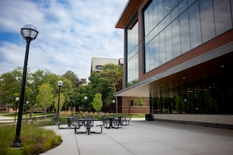

Explore Campus Support
Cross-disciplinary partner organizations across the
University of Michigan offer specialized instructional
support and workshop sessions that can strengthen your
engaged learning experience.
Explore the resources below to find support for
community-engaged learning, socially engaged design,
research, communication, and other project needs.
Ginsberg Center for Community Engagement
The Ginsberg Center prepares undergraduate and graduate
students for respectful, reciprocal community-engaged
learning in civic and nonprofit settings.
.jpg)
How It Can Support You
The Ginsberg Center provides support for students
engaging with communities and community partners.
Its resources can help students prepare for
respectful and reciprocal community-engaged work.
All first-year MSI and MHI students participate
in a foundational Ginsberg workshop through SI 500.
Ginsberg Resources
Requesting Support
Students and project teams can explore Ginsberg Center
workshops, advising, and other resources for
community-engaged work. Requests for in-class
workshops should be made at least one month in advance.
Learn More About Ginsberg Workshops and Support
Center for Socially Engaged Design (C-SED)
C-SED provides educational resources focused on
socially engaged design, sociotechnical thinking,
human-centered approaches, and community ethics
in technical applications.

Areas of Support
C-SED resources can support projects that connect
technical work with social and community contexts.
Educational resources address several areas relevant
to engaged learning.
- Socially engaged design
- Sociotechnical thinking
- Human-centered approaches
- Community ethics in technical applications
C-SED Resources
Students can explore C-SED resources when their
projects involve socially engaged, human-centered,
or community-focused technical work.
University of Michigan Library Instructional Services
University of Michigan Library Instructional Services
provides specialized instruction that can support
research, communication, and project development.
Available Support
Library instructional support covers a range of
research and communication skills that may be useful
throughout an engaged learning project.
- Finding and evaluating sources
- Special library collections
- Research strategies
- Posters and presentations
- Data visualization
- Citation management tools
Library Resources
The University of Michigan Library provides
instructional and research support related to
sources, research, presentations, visualization,
and citation management.
Find the Right Resource for Your Project
Different campus partners provide different forms of
support. Consider the needs of your project when deciding
which resource may be most relevant.
Use Campus Resources Throughout Your Experience
Campus partner resources can complement the guidance
provided by the Engaged Learning Office. The resource
that is most useful may change as you prepare for your
project and begin working with your project partner.
If you are still building the foundation for your project,
review
Preparing for Your Experience
for guidance on reflection, team readiness, project
context, and preparation.
If you are beginning your work with a project partner,
visit
Starting Your Experience
for guidance on professional communication, initial
client meetings, building partnerships, and establishing
expectations.